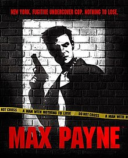

Inspirations
This story was at it's conception from my very first day dream during freshman year, I didn't have any initial inspirations but I knew I wanted to draw more than just simple stickman. So I took it upon myself to try to draw a tall girl in a Fuchsia colored trench coat and long Dark Burgandy hair, as the first day dream was her pulling a sword out of stone in a timid and curious manner. However the drawing itself was definetly far from what she looked like in the dream, I wasn't very good at this time, and in terms of expression she was a lot more confident in the drawing than in the dream and I didn't know at the time but the contrast of the drawing and the dream, I accidentaly my first OC who'll consistently appear in my later doodles on assignments to actual drawings. And with that, I was starting to look for inspiration to expand and develop more reoccuring characters and settigns for my art which will eventually deelop into my desire to make a full feldge comic and universe into light. And I'll go into them right now.
Deltarune

Falling Out of The World
Delatrune was a really big inspiration in terms of characters and story. I really liked the idea of someone just falling out of reality and into some different world completely foreign and strange and even hostile at times. I didn't know the name for such a genre at the time but it's called Isekai. In terms of world, at first I was fully committed to having a medeival high fantasy setting however I realized I only liked the environments and weapons, not really the magic or fashion and the themes of good versus evil. Reffering back to the first chracter I made in my head she was characterrized as impulsive, reckless, And agressive who's fighting style relied more on being angile and perceptive than sheer strength. Including her fashion being a trench coat, it just wouldn't work. So I decided to settle for a renaissance period at this point in time because I reeally liked guns and battles where each regiment carries really long pikes. It wasn't until later until I incoorpeated the 19th Century setting which I'll get into in the next couple of inspirations. When it comes to the character designs.
When it came to the inspiration for my the characters, Deltarune was a foundation starting point for how I wanted to characterize them, from the noble and stoic to the impulsive and crass and the soft and temperate. It was light hearted and wasn't dark or edgy, this game presented me the very first aspect of my story that I rally wanted to communicate was the benefit of cooperation and friendship and being kind in general. It was definetly a start, but my characters and story was reflection of how I saw the world and dynamics of how people acted between eachother, so I had to day dream elsewhere in terms of character.
L.A. Noire
Keen eyes and Fine Fashion
Beofre I started to even expand my drawingskills I was always enamored with the entire setting of L.A. Noire. It was the first video game where I was attracted to 1940s fashion including veihcles, they just looked so nice including the architecture, the sound the dress shoes made upon the floor. On my second playthrough of the game when I was much older I really liked the plot as I was able to maturely understand it, from big crimes like Drug Rings, Organized Crime, Corruption, Murder, to the more low scale ones like Arson, and Traffic which later influenced what my stories plot was all about along with the Isekai plot point. I loved how the game itself emphasises you to be as perceptive as possible from human expression in interviews and interrigations, including finding clues in many specifica areas high and low. And lastly, the music, I really loved Jazz once I started this game out, it sounded good to me, not sure why, but it sounded classy.
I started incorperating aspects of this games setting as it fit a lot more for what I had fashioned my characters with including me really wanting to draw big large scale cities. Lastly was also the fact that I really enjoyed the weapons even thought combat isn't really this games strong suit, the wooden stocked guns of WW2 really attracted me, even back when I was really small and my Father introduced me to Call of Duty Black Ops, specifcally in the missions where WW2 was still in progress. At this point I dropped the Renaisance setting entirely and took on the embracement the Early to Mid 20th century, it wasn't until I played Mafia II where I actually figured out the Weapons and clothing and style.
Batman: The Animated Series

Darkness and High Tower's
If L.A. Noire was my starting point in how I wanted my setting to truely be realized. When I watched this show and it's dark aestetics mixxed in with it's pops of bright yellow lights I was immediately in awe, including the sharp blocky character desings. I actually found the name for it, Dark Deco, Which is a sort of sub architectural style of Art Deco which is actually based on the 1920s. This was also when I was inspired by Batman himself in the show, Incredibly smart, Perceptive, and Strong, and intimidating, He would inspire all three of my main characters strong suits which I will present to you in The Characters section. Overall this animated show was the first to truely engross me in what a dark art style really meant, and I was absolutely down to Incorperate it once I started getting a hand of shading.
When it came to the villains this singular vigilante has faced, I was really interested into the psycology of why these characters do The things they do, ranging from deep trauma, Split Personality disorders, ASPD and BPD, or they just do what they do for the sake of it. Really did inspire me to really try to Implement these character traits to my antagonists and protagonists to really muddy the water's in terms of morals.However this was only really a part of a foundation for what role my character's ethicaly and philosophically play in my story.
Mafia II

Green Is all I See
Mafia II was more of an expansion to what I wanted in terms of setting, and was the only game to introduce me to the 1950s. Other than he fashion the cars were a bit different compared to the ones in L.A. Noire, being noticably faster and definetly a lot more stylish and colorful. When it came to the plot itself, I was always split in how I should represent what my cast of derranged fools should be, Organized Criminals?, Low life Thugs?, Noble Vigilante's?, Anti Heroes? Now Mafia II didn't provide me an answer but it difently gave me a piece of it, mostly of course centered aorund the crime aspect of things, grand theft auto, murder, robbery, larceny, brawling, betrayal, deceit, and general paranoia all around; Mafia II gave me insight in how I could properly make my cast of rogue's really be faced with internal and external struggle and making my story feel genuinely at times hopeless and tense. Including playing into how deep a person could go down in terms of greed and arrogance, putting many in danger.
I definetly enjoyed the action, although simple. Was a step up from L.A. Noire. It gave me a little bit more insight in the functionality of the weapons including the stances and fast paced combat encounters.
Lupin The III: Castle of Cagliostro

Noble Tomfloolery and Saving Well Dressed Women
From the cynical nihilism and overall moral ambiguity in Mafia II, Lupin the III: Castle of Cagliostro was the movie that provided me something that really fell more in line in what my character's actions and motive's were to be. I was always really attracted in how entertainment can be fun for the sake of it. The characters felt really larger than life from the detail's of what color their muzzle flash was to their incredibly cartoonish skill from espoinage to general violence. There was also themes of how less then virtuous can change for the better from a psoitive influene in their lives, which was a theme I really wanted to bring about in my story as the main protagonist gets into many confrontations with quite excentric character's throughout his journey. As for the Morally grey aspect I wanted to show in my story, I was always intending to add people who were objectively evil and also those who were objectively good. Withwhat themes and tone I wanted to implement in my story, with all of this to work with I had to really balance this out to not make the pacing jarring or confusing. I'm still practicing currently.
Medal of Honor: Frontline

Through The Fields and Trees, Through The Rails and Towns, I'm Still Marching
This was a game that really did inspire the whole arsenal of weapons many would be using in my world including giving me a clearer insight into how I could make more stealthy and espoinage type of arcs instead of just full blown explosive action. The music itself was classical, composed by Michael Giacchino
Omori

Dreaming with Happy People
Max Payne
One Man, One Mission
The Warriors